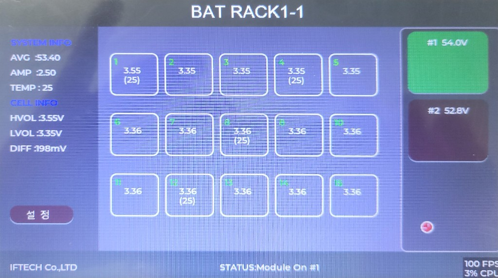
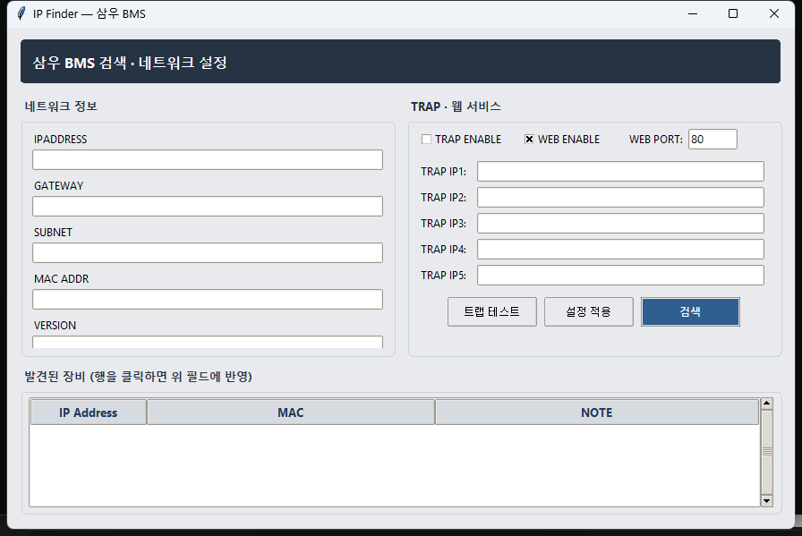
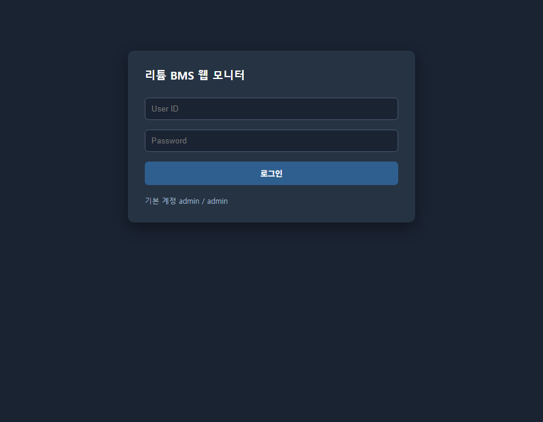
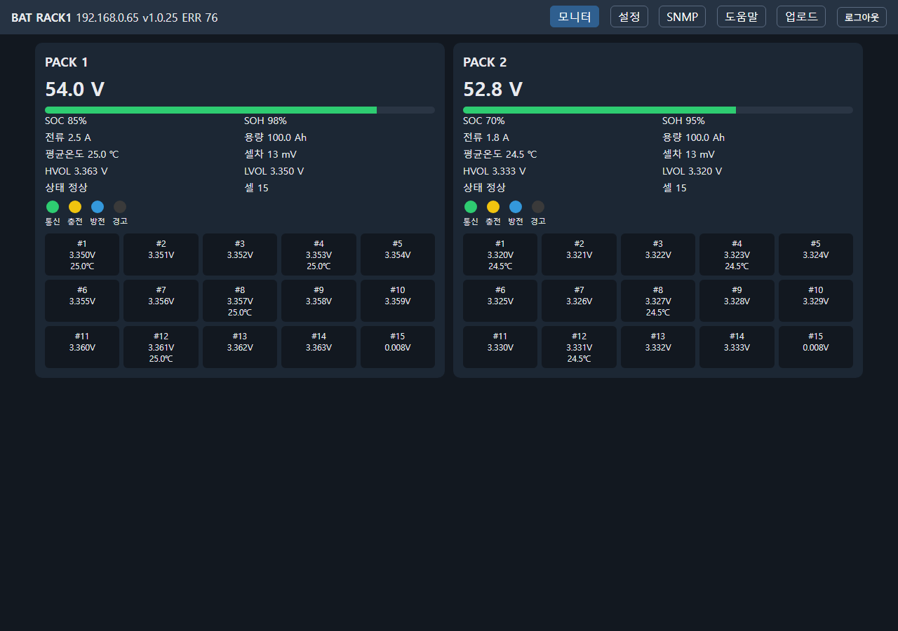
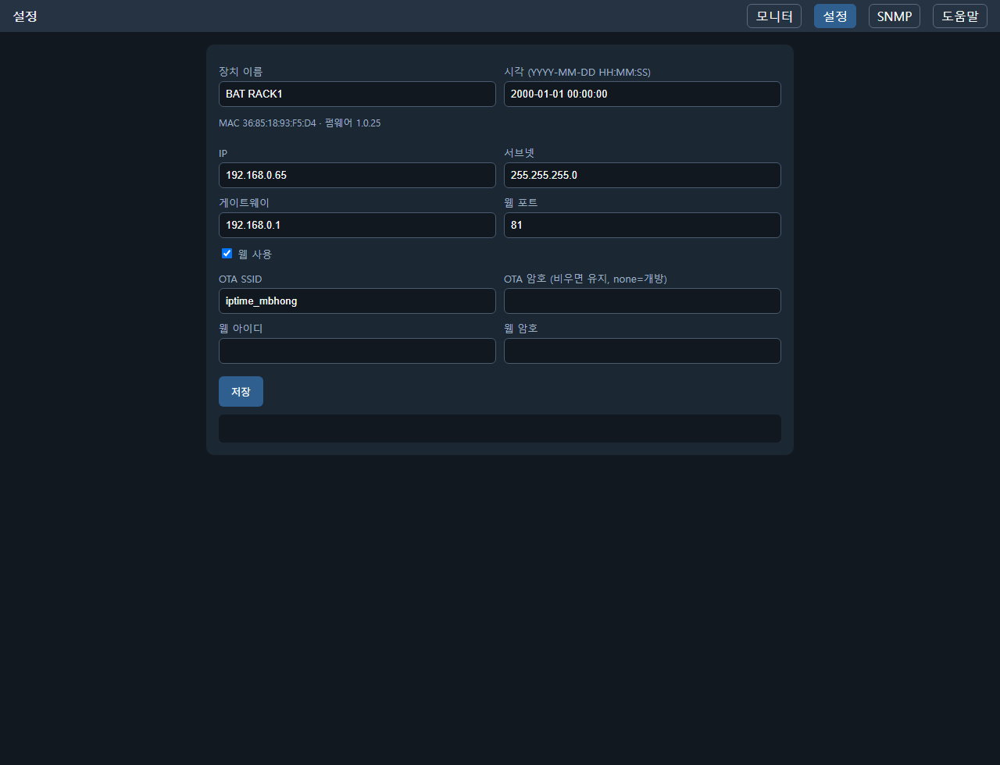
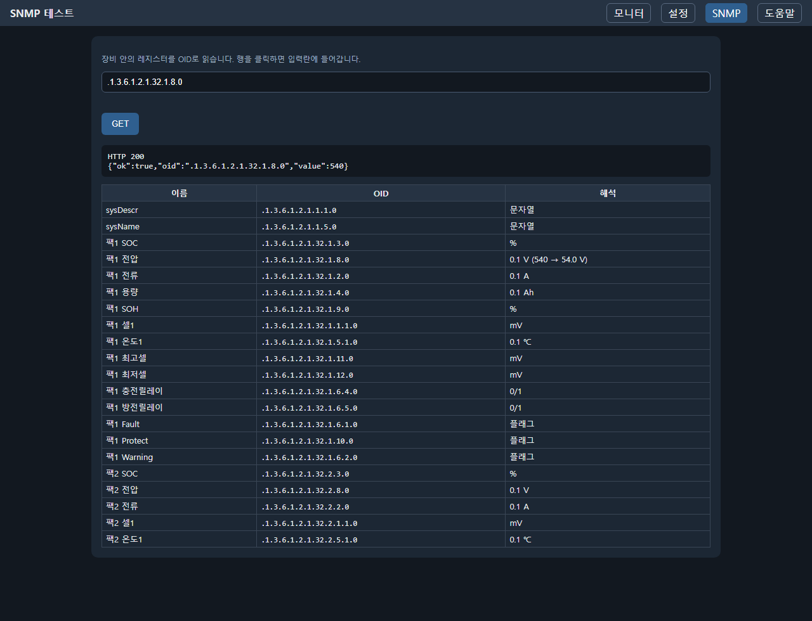
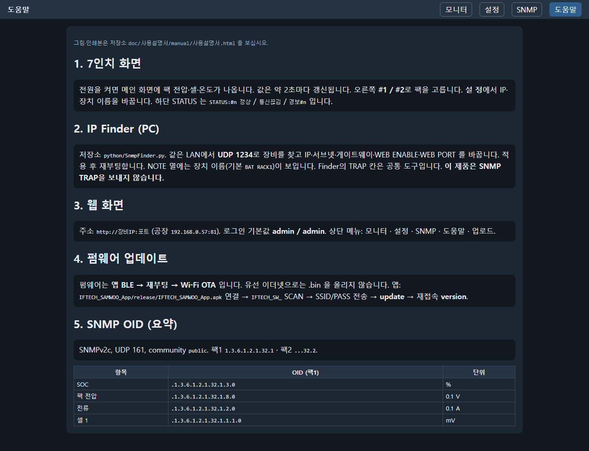
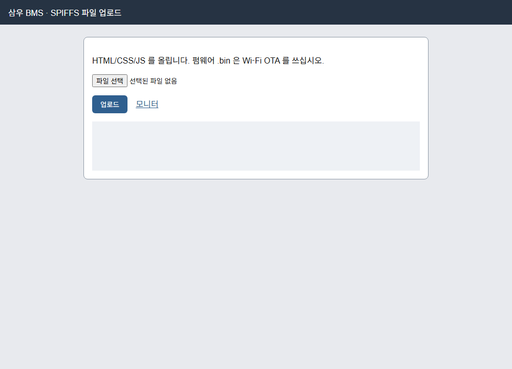
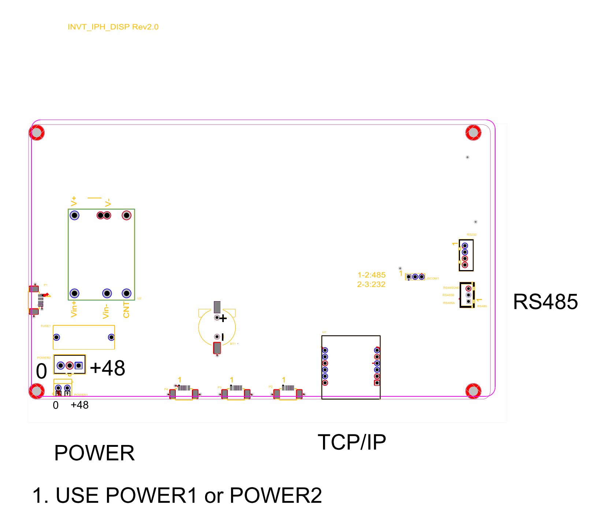

삼우 리튬 BMS 디스플레이
사용설명서
| 적용 제품 | 7인치 터치 디스플레이 (팩 1 · 팩 2 감시) |
|---|---|
| 적용 대상 | 삼우 리튬 배터리 팩 / 썬일렉컴 · 삼우 현장 |
| 제조 | IFTECH Co.,LTD |
| 펌웨어 버전 | V1.0.25 |
| 문서 버전 | 1.0 |
| 작성일 | 2026년 9월 12일 |
목 차
※ 항목을 클릭하면 해당 쪽으로 바로 이동합니다. (PDF에서도 동일하게 동작합니다.)
제1부 7인치 화면
1.1 이 장비가 하는 일
디스플레이는 RS-485로 삼우 리튬 팩 2대(슬레이브 주소 1, 2)를 읽고, 7인치 화면에 전압·전류·온도를 보여 줍니다. 이더넷으로는 SNMPv2c와 웹 모니터를 제공하므로 PC·상위 감시반에서 같은 값을 볼 수 있습니다.
| 항목 | 내용 |
|---|---|
| 배터리 | 삼우 리튬 팩 2대 (주소 1 · 2) |
| 화면 | 7인치 컬러 터치. 백라이트는 항상 켜져 있습니다. |
| 통신 (배터리) | RS-485, 19200 8N1 (표준 Modbus가 아닙니다) |
| 통신 (상위) | 이더넷 — SNMPv2c UDP 161, 웹(공장 포트 80), IP Finder UDP 1234 |
| 공장 IP | 192.168.0.57 / 255.255.255.0 / 게이트웨이 192.168.0.1 |
| BLE 이름 | IFTECH_SW_ + MAC |
| 펌웨어 업데이트 | 앱(또는 Serial Bluetooth) → 재부팅 → Wi‑Fi OTA. 유선 이더넷으로는 .bin 을 올리지 않습니다. |
1.2 메인 화면
전원을 켜면 아래와 같은 메인 화면이 나옵니다. 값은 약 2초마다 갱신됩니다.

STATUS:#n 정상 / 통신끊김 입니다. (사진은 이전 문구가 남아 있을 수 있습니다.)1.2.1 상단 제목
가운데 제목은 장치 이름 + 선택한 팩 번호입니다. 예: BAT RACK1-1 → 장치 이름 BAT RACK1, 지금 보고 있는 팩이 1번.
1.2.2 왼쪽 — SYSTEM INFO / CELL INFO
| 표시 | 의미 |
|---|---|
| AVG | 연결된 팩들의 팩 전압 평균 (V) |
| AMP | 선택한 팩의 전류 (A). 부호는 BMS를 따릅니다. |
| TEMP | 선택한 팩의 온도 평균 (°C) |
| HVOL | 셀 중 가장 높은 전압 (V) |
| LVOL | 셀 중 가장 낮은 전압 (V) |
| DIFF | HVOL − LVOL (mV). 셀 간 편차 |
설 정 버튼을 누르면 설정 화면으로 이동합니다.
1.2.3 가운데 — 셀 1 ~ 15
선택한 팩의 셀 전압입니다. 단위는 V입니다. 일부 칸에는 전압 아래 온도(°C)가 같이 나옵니다.
| 칸 | 온도 |
|---|---|
| 셀 1 | 온도 센서 1 |
| 셀 4 | 온도 센서 2 |
| 셀 8 | 온도 센서 3 |
| 셀 12 | 온도 센서 4 |
1.2.4 오른쪽 — 팩 선택
| 버튼 | 의미 |
|---|---|
| #1 54.0V | 팩 1 전압. 초록색이면 가운데에 이 팩이 표시됩니다. |
| #2 52.8V | 팩 2 전압. 어두운 색이면 선택되지 않은 상태입니다. |
버튼을 누르면 가운데·왼쪽 정보가 해당 팩으로 바뀝니다. 제목 끝 숫자(-1 / -2)와 하단 STATUS:#n 도 같이 바뀝니다.
화면 위의 작은 빨간 원은 지금 손가락이 닿은 위치입니다. 오래 화면을 안 만지면 사라집니다.
1.3 상태 램프와 하단 STATUS
하단 통신 / 충전 / 방전 / 경고 네 개입니다. 꺼져 있으면 회색, 켜져 있으면 색이 들어갑니다.
| 램프 | 색 | 켜질 때 |
|---|---|---|
| 통신 | 초록 | 팩 1 또는 팩 2에서 방금 정상 응답을 받았을 때 (짧게 점멸) |
| 충전 | 노랑 | 팩 1 또는 팩 2의 충전 릴레이가 켜져 있을 때 |
| 방전 | 파랑 | 팩 1 또는 팩 2의 방전 릴레이가 켜져 있을 때 |
| 경고 | 빨강 | 팩 1 또는 팩 2의 고장·보호·경고 플래그가 하나라도 0이 아닐 때 |
충전과 방전이 동시에 켜질 수 있습니다. BMS 릴레이 비트를 그대로 보여 주기 때문입니다.
| 하단 위치 | 내용 |
|---|---|
| 왼쪽 | IFTECH Co.,LTD |
| 가운데 | STATUS:#1 정상 또는 STATUS:#n 통신끊김 / 경보#n:원인 |
| 오른쪽 | 펌웨어 버전 |
정상이면 그 팩 응답이 정상입니다. 통신끊김이면 그 팩과 통신이 안 된 상태입니다. 마지막에 받은 값은 화면에 남을 수 있습니다.
1.4 설정 화면
메인에서 설 정을 누릅니다. 제목은 BMS SETTING입니다.
| 항목 | 설명 |
|---|---|
| IPADDRESS | 이 디스플레이의 고정 IP (네 칸) |
| SUBNET | 서브넷 마스크 |
| GATEWAY | 게이트웨이 |
| Device Name | 메인 상단 제목에 쓰는 이름 (예: BAT RACK1) |
| 버튼 | 동작 |
|---|---|
| 저 장 | 위 값을 내부에 저장합니다. IP를 바꿨으면 저장 후 재기동이 필요할 수 있습니다. |
| 메 인 | 저장하지 않고 메인 화면으로 돌아갑니다. |
Date Time 칸은 화면에 있으나, 이 버전에서는 운전용 시계로 쓰지 않습니다. 시각은 웹 설정 또는 앱 시간설정으로 맞출 수 있습니다.
1.5 일상 운전
- 전원과 이더넷, RS-485가 연결된 것을 확인합니다.
- 통신 램프가 간헐적으로 초록으로 깜빡이는지 봅니다.
- #1, #2를 눌러 두 팩 전압이 나오는지 확인합니다.
- DIFF가 갑자기 커지거나 경고 램프가 켜지면 해당 팩의 셀·온도를 확인합니다.
- 하단이
통신끊김이면 그 팩의 전원, 주소(1 또는 2), RS-485 배선·종단을 확인합니다.
제2부 IP Finder (PC 설정 프로그램)
2.1 개요 및 실행 방법
IP Finder는 PC에서 실행하는 설정 도구입니다. 같은 네트워크(LAN)에 연결된 디스플레이를 UDP 브로드캐스트(포트 1234)로 찾아내고, IP·서브넷·게이트웨이와 웹 사용 여부·웹 포트를 원격으로 바꿉니다.
모듈의 현재 IP를 모르더라도 같은 네트워크에 연결만 되어 있으면 찾을 수 있습니다. 처음 설치할 때 가장 먼저 쓰는 프로그램입니다.
| 실행 파일 | python/release/IPFinder.exe (별도 설치 없음. 더블 클릭) |
|---|---|
| 소스 | python/SnmpFinder.py — python python/SnmpFinder.py |
| 다시 만들기 | python\makeExe.ps1 |
| 사용 포트 | UDP 1234 (브로드캐스트 송·수신) |
| 창 제목 | IP Finder — 리튬 BMS |
② 전원을 인가하고 약 20초 이상 기다립니다.
③ Windows 방화벽에서 이 프로그램의 UDP 통신을 허용합니다.
2.2 화면 구성

| 구역 | 설명 |
|---|---|
| ① 네트워크 정보 | 선택한 장비의 IPADDRESS · GATEWAY · SUBNET · MAC ADDR · VERSION. 설정을 바꿀 때 이 칸을 수정합니다. VERSION은 읽기 전용입니다. |
| ② TRAP · 웹 서비스 | WEB ENABLE · WEB PORT를 지정합니다. TRAP 칸은 이 제품에서 사용하지 않습니다. 아래쪽에 트랩 테스트 · 설정 적용 · 검색 버튼이 있습니다. |
| ③ 발견된 장비 | 검색으로 응답한 목록입니다. 행을 클릭하면 ①·②에 값이 채워집니다.
NOTE 열에는 장치 이름(기본 BAT RACK1)이 보입니다. |
2.3 장비 검색 · 네트워크 설정

| 순서 | 작업 내용 |
|---|---|
| 1 | [검색]을 누릅니다. |
| 2 | 설정할 장비의 행을 클릭합니다. MAC ADDR 칸이 채워졌는지 확인합니다. |
| 3 | IPADDRESS · SUBNET · GATEWAY를 현장 망에 맞게 수정합니다. |
| 4 | 필요하면 WEB ENABLE · WEB PORT를 함께 설정합니다. (공장 포트 80) |
| 5 | [설정 적용]을 누릅니다. 장비가 저장한 뒤 재부팅합니다. 약 20~30초 기다립니다. |
| 6 | 다시 [검색]을 눌러 변경된 IP로 표시되는지 확인합니다. |
② 같은 네트워크에 동일한 IP가 있으면 안 됩니다.
③ WEB ENABLE을 해제하면 웹 화면에 접속할 수 없습니다. Finder로만 되돌릴 수 있습니다.
2.4 옵션 상세와 문제 해결
| 항목 | 기본값 | 설명 |
|---|---|---|
| WEB ENABLE | 사용 | 내장 웹 서버 사용 여부. 해제하면 EEPROM WEBSERVERPORT=0 이 됩니다. |
| WEB PORT | 81 | 1~65535. 80이 아니면 브라우저에서 http://IP:포트 로 접속합니다. |
| 증상 | 확인 사항 |
|---|---|
| [검색]을 눌러도 목록이 비어 있다 | 전원·랜 케이블, 같은 스위치, Windows 방화벽, 무선 랜을 잠시 끄고 재시도, 전원 인가 후 20초 |
| [설정 적용]을 눌러도 값이 안 바뀐다 | MAC ADDR가 비어 있으면 명령이 무시됩니다. 목록에서 행을 먼저 클릭하십시오. |
| 설정 후 웹이 안 된다 | 새 IP가 PC와 같은 대역인지, WEB ENABLE, WEB PORT(http://IP:포트) |
제3부 웹 모니터링 화면
3.1 접속 및 로그인
웹 브라우저(Chrome 권장) 주소창에 디스플레이의 IP와 포트를 입력합니다. 주소는 대소문자를 가리지 않습니다 (/Login.html 도 됩니다).
http://192.168.0.57:80/ ← 공장 기본 http://192.168.0.65:80/ ← 현장에서 IP를 바꾼 예

| 항목 | 설명 |
|---|---|
| User ID / Password | 공장 출하 기본값 admin / admin |
| 로그인 버튼 | 성공하면 세션이 만들어지고 BMS 모니터로 이동합니다. |
| 세션 유지 | 7일. 모니터 화면 우측 상단 로그아웃으로 즉시 해제합니다. |
3.2 화면 구성과 메뉴
로그인 후 모든 화면은 어두운 배경 + 상단 메뉴입니다. 메뉴는 모니터 · 설정 · SNMP · 도움말 · 업로드 입니다.
| 메뉴 | 내용 |
|---|---|
| 모니터 | 팩 1·2 실시간 값 (3.3절) |
| 설정 | IP·웹·OTA·계정 (3.4절) |
| SNMP | OID 조회 시험 (3.5절) |
| 도움말 | 장비 내장 간이 설명서 (3.6절) |
| 업로드 | HTML/CSS/JS 올리기 (3.7절) |
3.3 BMS 모니터
7인치와 같은 항목을 팩마다 카드로 보여 줍니다. 화면은 약 2초마다 자동 갱신됩니다.

| 항목 | 설명 |
|---|---|
| 큰 전압 | 팩 전압 (V). 통신 실패면 -- V |
| SOC / SOH | 잔량 · 수명 (%) |
| 전류 / 용량 | A, Ah |
| HVOL / LVOL / 셀차 | 유효 셀(100 mV 이상) 기준 최고·최저·편차 |
| 통신·충전·방전·경고 | 7인치와 같은 램프 |
| 셀 격자 | 셀 1~15 전압(V). 셀 1·4·8·12에 온도 |
상단에는 장치 이름, IP, 펌웨어 버전, ERR(RS-485 타임아웃 누적)이 표시됩니다.
3.4 설정

| 항목 | 설명 |
|---|---|
| 장치 이름 | 7인치 상단 제목과 같습니다. |
| 시각 | RTC (YYYY-MM-DD HH:MM:SS) |
| IP / 서브넷 / 게이트웨이 | 고정 이더넷 주소 |
| 웹 사용 / 웹 포트 | 해제하면 웹에 접속할 수 없습니다. |
| OTA SSID / 암호 | 앱 CLI의 ssid / pass와 같습니다. 암호를 비우면 유지, none이면 개방 AP. |
| 웹 아이디 / 웹 암호 | 로그인 계정. 둘 다 넣어야 바뀝니다. 기본 admin / admin. |
| MAC · 펌웨어 | 확인용 (변경 불가) |
3.5 SNMP TEST
관리 서버를 연결하기 전에, 장비가 특정 OID에 어떤 값을 돌려주는지 웹에서 확인합니다. 값은 장비 안 레지스터를 읽으며, 외부 SNMP 데몬을 다시 열지 않습니다.

- Object ID에 OID를 입력합니다. 예:
.1.3.6.1.2.1.32.1.8.0 - [GET]을 누릅니다. (페이지를 열면 기본 OID를 한 번 조회합니다.)
- 아래 표의 행을 클릭하면 입력란에 해당 OID가 들어갑니다.
.0을 빠뜨리면 조회되지 않습니다.
3.6 도움말
장비에 내장된 간이 설명서입니다. 플래시 용량 때문에 그림은 넣지 않습니다.
그림과 인쇄본은 본 HTML(doc/사용설명서/manual/사용설명서.html)을 사용하십시오.

3.7 파일 업로드
메뉴에는 없고 주소를 직접 입력합니다.
| 주소 | 용도 |
|---|---|
http://IP:포트/fileUpload |
웹 화면 파일(HTML/CSS/JS) 업로드. 여러 파일을 한 번에 선택할 수 있습니다. |
http://IP:포트/serverIndex |
이더넷 펌웨어 업로드는 쓰지 않습니다. 안내 페이지만 있습니다. |

.bin 은 제4부 앱 Wi‑Fi OTA로만 올립니다. 업로드 중 전원을 끄지 마십시오.
HTML을 올릴 때는 저장소 UploadFiles/ 만 사용합니다. jQuery / svg / fileUpload.html 은 넣지 않습니다.
제4부 앱으로 펌웨어 업데이트
4.1 업데이트 방식
펌웨어는 블루투스 → 재부팅 → Wi‑Fi 로 받습니다. 유선 이더넷으로는 펌웨어를 올리지 않습니다. BLE와 Wi‑Fi를 동시에 켜지 않습니다.
| 앱 APK | IFTECH_SAMWOO_App/release/IFTECH_SAMWOO_App.apk |
|---|---|
| 앱 이름 / 패키지 | IFTECH SAMWOO / com.iftech.iftech_samwoo_app |
| 장비 BLE 이름 | IFTECH_SW_ + MAC (IFTECH_ 로 시작하면 검색됩니다) |
| 서버 | http://ift.iptime.org:81/Esp32UploadFirmware/esp32_samwoo.json |
서버 JSON의 latest가 장비 VERSION보다 클 때만 받아 플래시합니다. 이미 최신이거나 실패하면 메시지를 찍고 배터리 감시 화면으로 들어갑니다.
4.2 앱 설치
- APK를 휴대폰으로 복사합니다.
- Android에서 알 수 없는 출처 설치를 허용합니다.
- IFTECH SAMWOO를 설치·실행합니다. 블루투스·위치 권한을 허용합니다.
다시 만들 때: IFTECH_SAMWOO_App\build_release.ps1
4.3 앱으로 올리기
| 순서 | 작업 |
|---|---|
| 1 | 휴대폰 모바일 핫스팟을 켭니다. 보안은 WPA2. 또는 인터넷이 되는 현장 공유기를 씁니다. |
| 2 | 앱에서 연결 → Bluetooth LE SCAN. IFTECH_SW_xx:xx:xx:xx:xx:xx 를 고릅니다. |
| 3 | 연결되면 version 칩을 눌러 지금 버전을 확인합니다. |
| 4 | Wi-Fi 설정에서 주변 Wi-Fi 검색해서 선택으로 AP를 고르고 암호를 넣습니다. iPhone은 목록 검색이 안 될 수 있으니 SSID를 직접 넣습니다. |
| 5 | SSID / PASS 장비로 전송. 로그에 SSID : / PASS : 가 나오면 저장된 것입니다. |
| 6 | 빠른 명령의 주황 update를 누르고 확인합니다. 장비가 재부팅하며 BLE는 끊깁니다. |
| 7 | 장비가 Wi‑Fi로 서버에서 펌웨어를 받습니다. 성공하면 새 버전으로 다시 뜹니다. |
| 8 | 앱에서 다시 연결한 뒤 version. 나온 값이 올린 펌웨어와 같으면 완료입니다. |
빠른 명령 칩: help · version · status · ip · mac · name · ssid? · time? · 시간설정 · update · reboot
4.4 Serial Bluetooth
Play 스토어 Serial Bluetooth 로도 같은 CLI를 보낼 수 있습니다.
ssid 핫스팟이름 pass 핫스팟암호 version update
재접속 후 다시 version. 개방 AP이면 pass none 입니다.
| 명령 | 동작 |
|---|---|
version | VERSION : x.y.z |
ssid / ssid 이름 | 저장된 SSID 표시 / 저장 |
pass 암호 | 비밀번호 저장 (none=개방) |
ip / ip a.b.c.d | 이더넷 주소 확인 / 저장 (재부팅 후 적용) |
name / status / mac | 장치 이름 · 팩 상태 · MAC |
time / time Y M D h m s | RTC 시각 |
update | 재부팅 후 Wi‑Fi OTA |
reboot / help | 재부팅 / 명령 목록 |
제5부 SNMP OID 규격
본 장은 SAMWOO-BAT-MIB 를 설명합니다. 관리 서버(NMS) 연동 시 이 장을 기준으로 하십시오.
MIB 파일: mib/SAMWOO_BAT_MIB_VER_01.MIB
5.1 트리 구조 개요
| 구분 | 값 |
|---|---|
| MIB 이름 | SAMWOO-BAT-MIB |
| SNMP 버전 | SNMPv2c |
| 조회 포트 | UDP 161 |
| Community (읽기) | public |
| 팩 1 | 1.3.6.1.2.1.32.1 |
| 팩 2 | 1.3.6.1.2.1.32.2 |
| 인스턴스 | 스칼라 객체는 끝에 .0 을 붙입니다. |
| 접근 권한 | 측정값은 RO Integer32 (원본 레지스터 정수) |
Walk는 pack1Value, pack2Value, batStatus, batCommon 단위로 하면 끝에서 멈춥니다.
트리 끝의 0 값(.32.3.1.0, .33.0, .1.3.6.1.2.2.0)은 종결용이며 배터리 데이터가 아닙니다.
5.2 팩 측정값
아래 OID는 팩 1 기준입니다. 팩 2는 32.1을 32.2로 바꿉니다.
| OID | 항목 | 해석 |
|---|---|---|
| .1.3.6.1.2.1.32.1.3.0 | SOC | % |
| .1.3.6.1.2.1.32.1.9.0 | SOH | % |
| .1.3.6.1.2.1.32.1.8.0 | 팩 전압 | 0.1 V (예: 540 → 54.0 V) |
| .1.3.6.1.2.1.32.1.2.0 | 전류 | 0.1 A, 부호 있음 |
| .1.3.6.1.2.1.32.1.4.0 | 용량 | 0.1 Ah |
| .1.3.6.1.2.1.32.1.11.0 | 최고 셀 | mV |
| .1.3.6.1.2.1.32.1.12.0 | 최저 셀 | mV |
| .1.3.6.1.2.1.32.1.13.0 | 최고 온도 | 0.1 ℃ |
| .1.3.6.1.2.1.32.1.14.0 | 최저 온도 | 0.1 ℃ |
| .1.3.6.1.2.1.32.1.15.0 | 셀 수 | 개 |
| .1.3.6.1.2.1.32.1.7.0 | BMS 버전 | 정수 |
| .1.3.6.1.2.1.32.1.6.4.0 | 충전 릴레이 | 0/1 |
| .1.3.6.1.2.1.32.1.6.5.0 | 방전 릴레이 | 0/1 |
| .1.3.6.1.2.1.32.1.6.1.0 | Fault | 플래그 |
| .1.3.6.1.2.1.32.1.10.0 | Protect | 플래그 |
| .1.3.6.1.2.1.32.1.6.2.0 | Warning | 플래그 |
| .1.3.6.1.2.1.1.1.0 | sysDescr | 문자열 |
| .1.3.6.1.2.1.1.5.0 | sysName | 웹 조회 시 장치 이름, SNMP 에이전트는 BAT-DISPLAY |
5.3 셀 전압 · 온도
셀 전압은 mV, 온도는 0.1 ℃ 정수입니다.
| 셀 N 전압 | .1.3.6.1.2.1.32.P.1.N.0 P=1 또는 2, N=1~16 |
|---|---|
| 온도 N | .1.3.6.1.2.1.32.P.5.N.0 N=1~8 |
| 셀 | 팩1 OID | 셀 | 팩1 OID |
|---|---|---|---|
| #1 | .32.1.1.1.0 | #9 | .32.1.1.9.0 |
| #2 | .32.1.1.2.0 | #10 | .32.1.1.10.0 |
| #3 | .32.1.1.3.0 | #11 | .32.1.1.11.0 |
| #4 | .32.1.1.4.0 | #12 | .32.1.1.12.0 |
| #5 | .32.1.1.5.0 | #13 | .32.1.1.13.0 |
| #6 | .32.1.1.6.0 | #14 | .32.1.1.14.0 |
| #7 | .32.1.1.7.0 | #15 | .32.1.1.15.0 |
| #8 | .32.1.1.8.0 | #16 | .32.1.1.16.0 |
표의 OID는 .1.3.6.1.2.1 을 생략한 표기입니다. 조회 시 앞에 붙이고 끝에 이미 .0이 있습니다.
5.4 조회 예시
# 팩1 전압 (정수 540 → 54.0 V) snmpget -v2c -c public 192.168.0.57 .1.3.6.1.2.1.32.1.8.0 # 팩1 SOC snmpget -v2c -c public 192.168.0.57 .1.3.6.1.2.1.32.1.3.0 # 팩1 트리 Walk snmpwalk -v2c -c public 192.168.0.57 .1.3.6.1.2.1.32.1
도구가 없으면 웹 SNMP TEST(3.5절)에서 같은 값을 확인할 수 있습니다.
저장소 python/snmp_check.py 192.168.0.65 로도 확인할 수 있습니다.
.8.0 ② SOC .3.0 ③ Fault / Protect / Warning웹 모니터의 ERR이 계속 늘면 RS-485를 먼저 점검하십시오.
제6부 하드웨어 사양
6.1 일반 사양
| 항목 | 규격 |
|---|---|
| 보드 | Sunton ESP32-8048S070 (ESP32-S3, 7인치 RGB 터치) |
| 전원 | 보드 실크 0 / +48 (POWER1 또는 POWER2 중 하나) |
| 이더넷 | WIZ610 / W6100 SPI, RJ45 (TCP/IP) |
| 배터리 통신 | RS-485, 19200 8N1 |
| 터치 | GT911 (I2C). RTC(DS1307)와 버스 공유 |
| SNMP / 웹 / Finder | UDP 161 / HTTP(설정 포트) / UDP 1234. 모두 메인 loop에서만 W6100 SPI |
6.2 인터페이스

| 표기 | 용도 |
|---|---|
| POWER 0 / +48 | 전원. POWER1 또는 POWER2 중 하나만 사용합니다. |
| TCP/IP | 이더넷 (SNMP · 웹 · IP Finder) |
| RS485 | 삼우 팩 통신. 점퍼 실크 1-2:485 / 2-3:232 |
부록
부록 A. 공장 출하 초기값
| 항목 | 초기값 |
|---|---|
| 장치 이름 | BAT RACK1 |
| IP / Subnet / Gateway | 192.168.0.57 / 255.255.255.0 / 192.168.0.1 |
| DNS 1 / DNS 2 | 8.8.8.8 / 164.124.101.2 |
| 웹 서버 포트 | 81 (0이면 웹 끔) |
| 웹 로그인 ID / PW | admin / admin |
| SNMP Community | public |
| RS-485 / 팩 주소 | 19200 8N1 / 1, 2 |
| BLE 이름 | IFTECH_SW_<MAC> |
| 공장 OTA SSID | iftech (현장에서는 앱으로 바꿉니다) |
부록 B. 문제 해결
| 증상 | 확인 및 조치 |
|---|---|
| 화면은 켜지나 #1 #2가 --V | RS-485 배선, BMS 전원, 슬레이브 주소 1·2, 19200 8N1 |
| 한쪽만 통신끊김 | 해당 팩 주소·케이블. 다른 팩은 정상일 수 있습니다. |
| 통신 램프가 전혀 안 깜빡임 | RS-485 전체가 끊긴 상태입니다. |
| 경고 램프 점등 | 해당 팩 Fault / Protect / Warning. 셀 DIFF·온도 확인 |
| 웹 접속이 되지 않는다 | IP Finder [검색], WEB ENABLE, 포트(공장 80), ping |
| 로그인 비밀번호를 잊었다 | 앱/CLI에서 확인할 수 없습니다. 웹 계정을 다시 쓰려면 설정 화면에서 ID/PW를 둘 다 넣어 저장하거나, 담당자에게 EEPROM/웹 계정 초기화를 요청하십시오. |
| NMS에서 SNMP가 안 된다 | community public, UDP 161, OID 끝 .0, 웹 SNMP TEST로 모듈 자체 응답 확인 |
| 앱에 장비가 안 보인다 | BLE 권한, 화면이 켜져 있는지, 이름이 IFTECH_SW_ 인지 |
| update 후 버전이 그대로 | 핫스팟/공유기 이름·암호(WPA2), 휴대폰 데이터, 서버 JSON의 latest가 장비보다 큰지 |
| 로그인은 되는데 모니터가 비어 있다 | /fileUpload 로 UploadFiles/ 를 다시 올리십시오. |
| 설정 저장 후 접속이 안 됨 | 새로 넣은 IP·포트로 접속. 잘못 넣었으면 Finder로 검색해 되돌립니다. |
부록 C. 인쇄 안내
.\make_pdf.ps1 을 실행합니다. Chrome/Edge 헤드리스로 변환합니다.수동 (Chrome):
① Ctrl + P
② 대상 : PDF로 저장 / 용지 : A4 / 레이아웃 : 세로
③ 배율 : 100 %, 여백 : 기본값
④ 「배경 그래픽」을 반드시 체크하십시오.
— 문서 끝 —
본 설명서는 펌웨어 V1.0.25 기준으로 작성되었습니다.